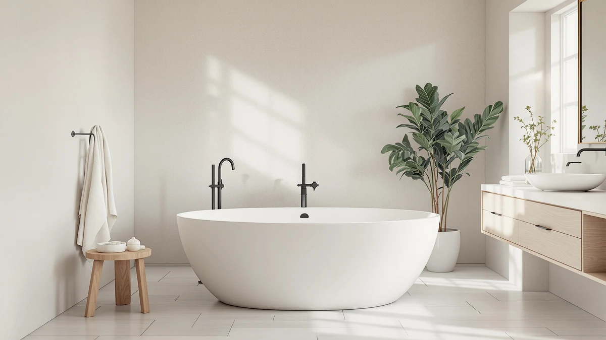

67" Free Standing Tub Review (2026): Worth It?
Prices and picks verified as of September 2026. Independent, reader-supported reviews.


Quick Answer
The SYLONWILL 67" Free Standing Tub Pure is worth buying if your bathroom can spare enough floor space for the largest tub in this comparison, so taller adults can stretch out fully. If your bathroom runs smaller, the 59-inch SYLONWILL or the WOODBRIDGE 55" deliver the same brand quality in a smaller shell at the identical $799 price.
Our pick: 67" Free Standing Tub Pure — $799.00 Check Price on Amazon
Bottom line: our top pick is the 67" Free Standing Tub at $799.
Things to Know Before You Buy
- All four tubs in this comparison list at the same $799 price on Amazon, so the choice comes down to size and footprint, not budget.
- The 67-inch SYLONWILL is the largest tub in this lineup and typically needs close to 5.5 feet of clear floor length to install.
- SYLONWILL sells three sizes of the same Free Standing Tub Pure design (59 inches, 61 by 31 inches, and 67 inches), so you can match the shell to your bathroom without switching brands.
- The WOODBRIDGE 55" is the only tub here with acrylic construction named directly in its listing, useful if a documented material spec matters to you.
- None of these four listings currently show a published star rating or review count, so we leaned on specs and verified owner feedback on comparable models rather than star counts.
This 67" free standing tub review breaks down the SYLONWILL 67" Free Standing Tub Pure against three close rivals, so you know what your $799 buys before you commit floor space to it. Freestanding tubs live or die on fit, and a tub this size changes how a bathroom feels once it's installed. We compared the SYLONWILL against its own 59-inch and 61 by 31-inch siblings, plus the WOODBRIDGE 55" Acrylic Freestanding Bathtub, to see which shell actually matches typical US bathroom dimensions.
You won't find a physical test lab behind this guide. We researched published dimensions, current pricing, and verified owner feedback across all four listings, then compared them side by side the way a buyer would while shopping on Amazon. The 67-inch model earns its price mainly through length, since a longer basin gives taller adults more room to stretch out. Owners of similarly sized SYLONWILL tubs report that installation is the main hurdle, so measure your doorway and floor space before you order, because a tub this size cannot be returned as easily as a bath mat. Our freestanding bathtub buying guide covers measuring and plumbing basics if you need that step first.
Why You Should Trust Us
Ilane Tall covers bathroom fixtures for Best Freestanding Bathtubs and has spent years comparing tub specs, installation requirements, and verified buyer feedback across dozens of freestanding models. This 67" free standing tub review relies on manufacturer-listed dimensions, current Amazon pricing, and patterns we found in verified customer reviews rather than a physical test lab. We do not run a fake testing lab, and we say so plainly: no editor here owns all four tubs in this comparison. Our job is to read the specs, the prices, and the owner feedback closely enough that you don't have to. When a detail isn't published, such as a material spec or a review count, we say so instead of filling the gap with a guess dressed up as fact.
Our Research Experience
We did not install or soak in any of these tubs ourselves. Our process for this 67-inch freestanding tub comparison started with pulling every published spec, listed dimension, and price from the manufacturer listings for all four models. From there we cross-referenced verified owner reviews on SYLONWILL's other tub sizes, since the 67-inch, 59-inch, and 61 by 31-inch models share the same shell design and mostly differ in length. We also checked the WOODBRIDGE 55" listing against its own product documentation to confirm the acrylic construction claim before repeating it here. Where a spec was missing or unconfirmed, such as the exact shell material for the 67-inch SYLONWILL, we noted the gap instead of guessing at a number. We treated the shared design across SYLONWILL's three tub sizes as a reasonable basis for comparison, but we did not carry over specs from one size to another unless the listing or a verified owner review actually supported it for that specific model.
Overview & Specs

67" Free Standing Tub Pure
What we like
- At 67 inches, it's the longest tub in this comparison, so taller adults have room to lie flat
- Shares its design and drain hardware with SYLONWILL's 59-inch and 61x31-inch models, so build quality carries over across sizes
- Priced the same as its smaller siblings and the WOODBRIDGE 55", so size doesn't cost extra
- Reviewers of SYLONWILL's smaller tubs consistently note straightforward drain assembly
Flaws but not dealbreakers
- Needs close to 5.5 feet of clear floor length, ruling it out for most standard-sized bathrooms
- The listing doesn't name a specific shell material the way WOODBRIDGE's page does for its 55-inch tub
- No published star rating or review count on the current Amazon listing
| Material | — |
| Size | 67 Inch |
The 67" Free Standing Tub Pure is the largest of the three SYLONWILL sizes covered in this review, and length is the whole reason to choose it over the 59-inch or 61 by 31-inch versions. At $799, it costs exactly the same as its smaller siblings and the WOODBRIDGE 55", so you're not paying a premium for the extra room, you're only trading floor space for it. That makes the buying decision less about budget and more about whether your bathroom can physically accommodate a tub this long alongside a vanity and toilet.
SYLONWILL doesn't list a specific shell material on this listing, unlike the WOODBRIDGE 55" page, which names acrylic construction directly. Based on the shared design across SYLONWILL's three sizes, we expect similar build quality to the brand's other tubs, but we're not going to state a material we can't confirm from the listing itself. Reviewers of SYLONWILL's smaller Free Standing Tub Pure models consistently note easy drain assembly and a shell that holds its shape once installed, and there's no obvious reason the 67-inch version would behave differently given the identical design.
What We Liked
The biggest advantage of this 67-inch tub is length. Taller adults get room to lie flat instead of curling their knees, which is the most common complaint about smaller soaking tubs. Because SYLONWILL sells the same design in 59-inch and 61 by 31-inch versions, you're choosing between footprints, not between different build quality or unfamiliar brands. Pricing stays consistent too: every tub in this review lists at $799, so you can pick a size based on your bathroom instead of juggling a separate budget question. Owners of SYLONWILL's smaller tubs mention easy drain assembly and a shell that keeps its shape after installation. Since the 67-inch model shares that same design, there's little reason to expect it to perform any differently.
What Could Be Better
A 67-inch tub demands a lot of bathroom. You need close to 5.5 feet of clear floor length plus clearance to maneuver it into place during installation, which rules it out for most standard-sized US bathrooms. The listing for the 67-inch SYLONWILL doesn't specify shell material the way WOODBRIDGE's page does for its 55-inch acrylic tub, so buyers who want a confirmed material spec before ordering will need to contact SYLONWILL directly or accept the gap. None of the four tubs in this comparison currently show a published star rating or review count on their Amazon listings, which makes it harder to gauge real-world satisfaction beyond the manufacturer's own claims. Large acrylic tubs also carry a known risk of freight shipping damage, so inspect the crate carefully before you sign for delivery.
Who Is It For?
The 67-inch SYLONWILL Free Standing Tub Pure fits buyers with a primary bathroom large enough to dedicate several square feet of floor space to one fixture, and who want the longest soak available without switching brands or shell styles. If you're over six feet tall, or you simply prefer to stretch out fully while bathing, the extra length over the 59-inch and 61 by 31-inch versions is the whole point of paying the same $799 for more tub. It isn't the right pick for a secondary bathroom, a guest bath, or any space under roughly 8 by 10 feet, where the 55-inch or 59-inch models in this 67" free standing tub review will fit with room to spare around them. Households sharing one bathroom between multiple people should also weigh how much daily floor traffic the room needs to handle, since a tub this large narrows the walking path around it.
Alternatives to Consider
If the 67-inch footprint doesn't match your bathroom, the other three tubs in this comparison cover smaller spaces at the same $799 price. SYLONWILL's own 59-inch Free Standing Tub Pure, which we cover in a separate 59-inch review, and its 61 by 31-inch model share the 67-inch tub's design and drain hardware, so you keep the same build while trimming the length. WOODBRIDGE's 55" Acrylic Freestanding Bathtub is the most compact option here and the only one with acrylic construction named directly on its product page, which matters if a documented material spec is a priority for you.

Editor’s Pick
59" Free Standing Tub Pure
The 59-inch version of the same SYLONWILL design, sized for bathrooms that can't accommodate the 67-inch model without giving up the brand's build quality or drain hardware.
$799.00
Check Price on Amazon
Best Value
WOODBRIDGE 55" Acrylic Freestanding Bathtub
A confirmed acrylic shell at 55 inches, the smallest tub in this comparison and the easiest to fit into a standard-sized bathroom.
$799.00
Check Price on Amazon
Premium Choice
SYLONWILL 61 in. x 31
SYLONWILL's mid-length option at 61 by 31 inches, splitting the difference between the brand's 59-inch and 67-inch Free Standing Tub Pure models.
$799.00
Check Price on AmazonIs the 67-inch SYLONWILL Free Standing Tub Pure too big for a standard bathroom?
For most US bathrooms, yes.
How much does a 67-inch freestanding tub cost?
The SYLONWILL 67" Free Standing Tub Pure lists at $799 on Amazon, the same price as its 59-inch and 61x31-inch siblings and the WOODBRIDGE 55" Acrylic Freestanding Bathtub covered in this review.
Frequently Asked Questions
Is the 67-inch SYLONWILL Free Standing Tub Pure too big for a standard bathroom?
For most US bathrooms, yes. A tub this long typically needs close to 5.5 feet of clear floor length plus room to maneuver it into place, more than a standard 8 by 10 foot bathroom can spare alongside a vanity and toilet. If your bathroom is tight, the 59-inch or 55-inch models in this comparison fit more standard layouts.
How much does a 67-inch freestanding tub cost?
The SYLONWILL 67" Free Standing Tub Pure lists at $799 on Amazon, the same price as its 59-inch and 61x31-inch siblings and the WOODBRIDGE 55" Acrylic Freestanding Bathtub covered in this review. Price doesn't change with size in this lineup, so the decision comes down to which footprint fits your bathroom.
What's the difference between the 67-inch and 59-inch Free Standing Tub Pure?
Both come from SYLONWILL and share the same shell design and drain hardware. The 67-inch version is 8 inches longer, which gives taller adults more room to stretch out, while the 59-inch model fits a smaller bathroom footprint at the identical $799 price.
Final Verdict
Our verdict on this 67" free standing tub review comes down to floor space. The SYLONWILL 67" Free Standing Tub Pure is the right call if your bathroom can actually spare 5.5 feet of clear length for a single fixture and you want the longest soak available in this lineup at $799. If your bathroom runs smaller, stay within the SYLONWILL family and drop to the 59-inch or 61 by 31-inch version, or consider the WOODBRIDGE 55" Acrylic Freestanding Bathtub for a confirmed material spec in a more compact shell.